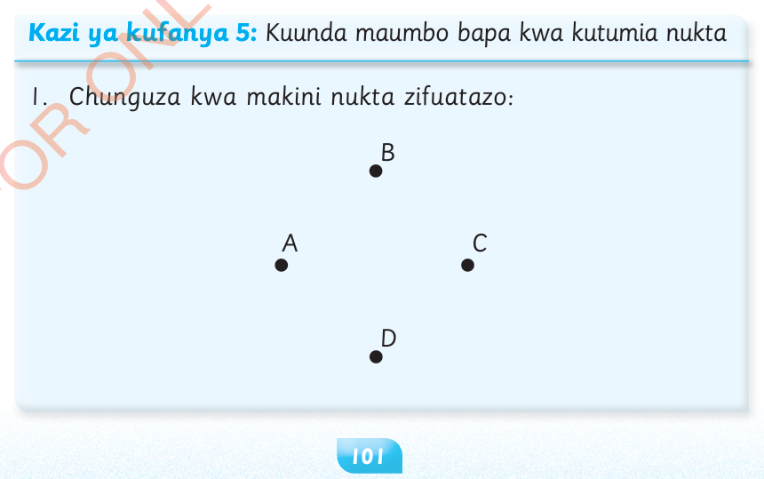

9. Chora kipande cha mstari PQ, kisha taja idadi ya nukta za mwishoni.
10. Unganisha mwisho wa vipande vitatu vya mstari AB, BC na CA, kisha andika jina la umbo linalopatikana.
Kuunda maumbo bapa
Umbo bapa ni umbo lenye pande mbili za urefu na upana tu. Halina unene au kimo. Kuna aina nyingi za maumbo bapa ikiwemo mraba, mstatili, pembetatu, duara na mviringo.

Kazi ya kufanya 5: Kuunda maumbo bapa kwa kutumia nukta
1. Chunguza kwa makini nukta zifuatazo: